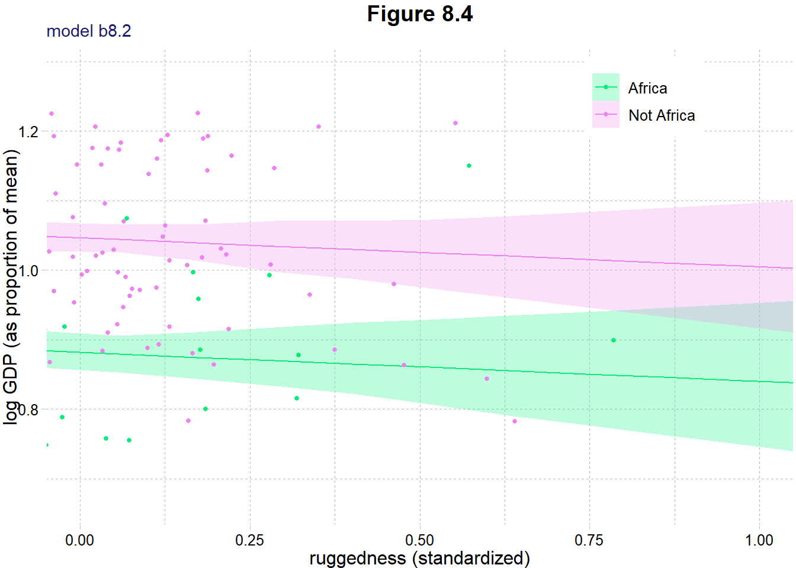
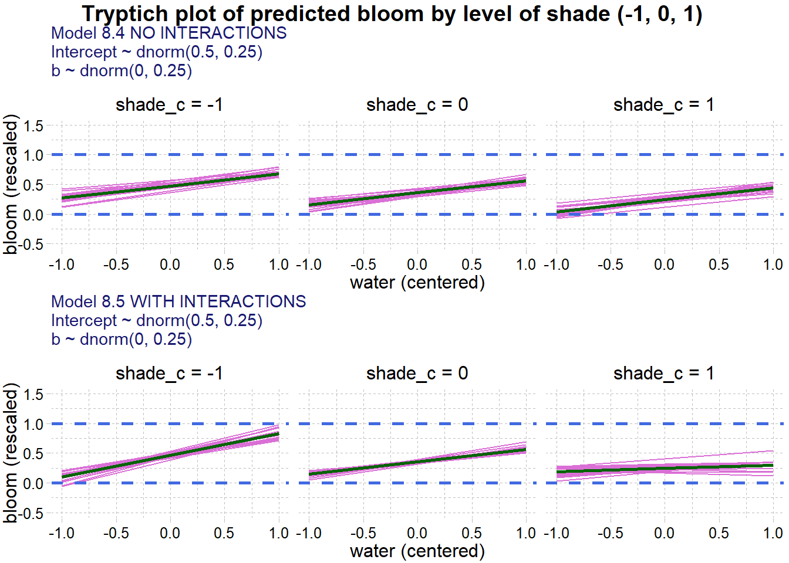
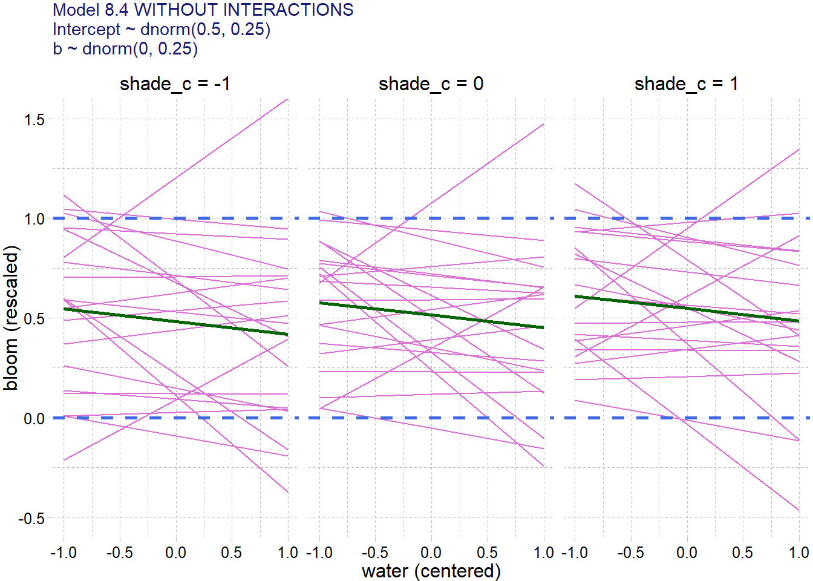

# For execution on a local, multicore CPU with excess RAM
options(mc.cores = parallel::detectCores())
# To avoid recompilation of unchanged Stan programs
rstan_options(auto_write = TRUE)8 Conditional Manatees
Some options to facilitate the computations
The default theme used by ggplot2
# The default theme used by ggplot2
ggplot2::theme_set(ggthemes::theme_pander())
ggplot2::theme_update(title = element_text(color = "midnightblue"))8.1 Building an interaction
Load the data, log transform the gdp measure, remove incomplete cases and create a character column for Africa or Not Africa.
data(rugged)
dataRugged <- rugged |>
filter(complete.cases(rgdppc_2000)) |>
mutate(log_gdp = log(rgdppc_2000),
is_africa = if_else(cont_africa == 1, "Africa", "Not Africa"),
is_africa = as.factor(is_africa))
rm(rugged)
# NOTE: Make sure as.vector() is outside of scale().
# Otherwise it keeps the vector as an array and causes all sort of little
# problems. In particular, a very obscure, fine error message
# in doing brms fit for b8.2.
dataRugged_nona <- dataRugged |>
drop_na(rgdppc_2000) |>
mutate(log_gdp_s = log_gdp / mean(log_gdp),
rugged_s = scales::rescale(rugged),
rugged_sc = as.vector(scale(rugged_s, center = TRUE, scale = FALSE)))
dataRugged_nona |>
select(log_gdp, log_gdp_s, rugged, rugged_s, rugged_sc) |>
skim() |>
select(-n_missing, -complete_rate) |>
mutate(across(.cols = where(is.numeric), .fns = round, digits = 2))Warning: There was 1 warning in `mutate()`.
ℹ In argument: `across(.cols = where(is.numeric), .fns = round, digits = 2)`.
Caused by warning:
! The `...` argument of `across()` is deprecated as of dplyr 1.1.0.
Supply arguments directly to `.fns` through an anonymous function instead.
# Previously
across(a:b, mean, na.rm = TRUE)
# Now
across(a:b, \(x) mean(x, na.rm = TRUE))| Name | select(…) |
| Number of rows | 170 |
| Number of columns | 5 |
| _______________________ | |
| Column type frequency: | |
| numeric | 5 |
| ________________________ | |
| Group variables | None |
Variable type: numeric
| skim_variable | mean | sd | p0 | p25 | p50 | p75 | p100 | hist |
|---|---|---|---|---|---|---|---|---|
| log_gdp | 8.52 | 1.17 | 6.15 | 7.54 | 8.58 | 9.48 | 10.96 | ▃▆▇▆▃ |
| log_gdp_s | 1.00 | 0.14 | 0.72 | 0.89 | 1.01 | 1.11 | 1.29 | ▃▆▇▆▃ |
| rugged | 1.33 | 1.17 | 0.00 | 0.44 | 0.98 | 1.96 | 6.20 | ▇▅▁▁▁ |
| rugged_s | 0.21 | 0.19 | 0.00 | 0.07 | 0.16 | 0.32 | 1.00 | ▇▅▁▁▁ |
| rugged_sc | 0.00 | 0.19 | -0.21 | -0.14 | -0.06 | 0.10 | 0.79 | ▇▅▁▁▁ |
and we use the following DAG, see overthinking box in introduction of section 8.1 for another possible DAG.
dagRugged <- list()
dagRugged <- within(dagRugged, {
coords <- tibble(name = c("C", "G", "R", "U"),
x = c(3, 2, 1, 2),
y = c(2, 2, 2, 1))
dag <- dagify(G ~ C + R + U,
R ~ U,
latent = "U",
outcome = "G",
coords = coords)
p <- dag |>
ggdag_status(aes(color = status), as_factor = TRUE, node_size = 14,
text_size = 4, text_col = "midnightblue") +
scale_color_paletteer_d("khroma::light",
na.value = "honeydew3",
direction = 1) +
theme_dag() +
theme(legend.position = c(0.8, 0.2)) +
labs(title = "African nations", subtitle = "Section 8.1")
})
dagRugged$p
plotRugged <- list()
plotRugged <- within(plotRugged, {
Africa <- dataRugged_nona |>
filter(grepl("^africa$", x = is_africa, ignore.case = TRUE)) |>
ggplot(aes(x = rugged_s, y = log_gdp_s)) +
geom_smooth(method = "lm", formula = y ~ x, fill = "lightblue", color = "royalblue") +
geom_point(color = "burlywood4") +
labs(title = "African nations", x = "ruggedness (rescale)",
y = "log GDP (prop of mean)")
notAfrica <- dataRugged_nona |>
filter(!grepl("^africa$", x = is_africa, ignore.case = TRUE)) |>
ggplot(aes(x = rugged_s, y = log_gdp_s)) +
geom_smooth(method = "lm", formula = y ~ x, fill = "burlywood1", color = "burlywood4") +
geom_point(color = "royalblue") +
labs(title = "Non-African nations", x = "ruggedness (rescale)",
y = "log GDP (prop of mean)")
title <- "Figure 8.2. Separate linear regressions inside and outside of Africa"
})
wrap_plots(plotRugged[c("Africa", "notAfrica")]) +
plot_annotation(title = plotRugged$title)
8.1.1 Making a rugged model
and split the data into countries from Africa and not.
# lst <- d |>
# split(d$is_africa)
# str(lst)and now creating a simple univariate model
\[ \begin{align*} \log{(log\_gdp\_s_i)} &\sim \mathcal{N}(\mu_i, \sigma) \\ \mu_i &= \alpha + \beta \cdot rugged\_sc_i \\ \alpha &\sim \mathcal{N}(1, 1) \\ \beta &\sim \mathcal{N}(0, 1) \\ \sigma &\sim \mathcal{Exp}(1) \end{align*} \]
Now fit the model. Get the prior samples by using sample_prior = TRUE.
tictoc::tic(msg = sprintf("run time of %s, use the cache.", "60 secs."))
fit08_01a <- xfun::cache_rds({
out <- brm(
data = dataRugged_nona,
family = gaussian,
log_gdp_s ~ 1 + rugged_sc,
prior = c(
prior(normal(1, 1), class = Intercept),
prior(normal(0, 1), class = b),
prior(exponential(1), class = sigma)),
sample_prior = TRUE,
iter = 1000, warmup = 500, chains = 4, cores = detectCores(),
seed = 809)
out <- brms::add_criterion(out, criterion = c("waic", "loo"))},
file = "ch08_fit08_01a")
tictoc::toc()run time of 60 secs., use the cache.: 0.12 sec elapsed# tictoc::tic(msg = sprintf("run time of %s, use the cache.", "60 secs."))
# b8.1a <- xfun::cache_rds({
# out <- brm(
# data = dd,
# family = gaussian,
# log_gdp_s ~ 1 + rugged_sc,
# prior = c(
# prior(normal(1, 1), class = Intercept),
# prior(normal(0, 1), class = b),
# prior(exponential(1), class = sigma)),
# sample_prior = TRUE,
# iter = 2000, warmup = 1000, chains = 4, cores = detectCores(),
# seed = 8)
# out <- brms::add_criterion(out, criterion = c("waic", "loo"))},
# file = "ch08_b08_01a")
# tictoc::toc()posterior_summary(fit08_01a) |>
round(digits = 3) Estimate Est.Error Q2.5 Q97.5
b_Intercept 1.000 0.010 0.979 1.020
b_rugged_sc 0.001 0.055 -0.105 0.108
sigma 0.138 0.007 0.124 0.153
prior_Intercept 1.050 0.988 -0.866 2.973
prior_b 0.016 0.990 -1.957 1.984
prior_sigma 1.030 1.032 0.031 3.798
lprior -1.978 0.008 -1.993 -1.963
lp__ 91.845 1.152 88.832 93.182the estimates are described in section 8.1.1 of McElreath but he seems to have
prior08_01a <- list()
prior08_01a <- within(prior08_01a, {
draws <- prior_draws(fit08_01a)
df <- draws |>
slice_sample(n = 50) |>
tibble::rownames_to_column(var = "id") |>
expand(nesting(id, Intercept, b), rugged_sc = c(-2, 2)) |>
mutate(log_gdp_s = Intercept + b * rugged_sc,
rugged_s = rugged_sc + mean(dataRugged_nona$rugged_s))
est <- c("fixed" = min(dataRugged_nona$log_gdp_s), "b" = diff(range(dataRugged_nona$log_gdp_s)))
p <- ggplot(df, aes(x = rugged_s, y = log_gdp_s, group = id)) +
geom_line(color = "orchid") +
geom_hline(yintercept = range(dataRugged_nona$log_gdp_s),
size = 1, linetype = 2, color = "royalblue") +
geom_abline(intercept = est["fixed"], slope = est["b"], color = "purple", size = 1) +
coord_cartesian(xlim = c(0, 1), ylim = c(0.5, 1.5)) +
labs(
subtitle = "Intercept ~ dnorm(1, 1)\nb ~ dnorm(0, 1)",
x = "ruggedness (rescaled)",
y = "log GDP (prop of mean)")
})Warning: Using `size` aesthetic for lines was deprecated in ggplot2 3.4.0.
ℹ Please use `linewidth` instead.# prior08_01a$pNow using the prior where we want the intercept to be around 1 with extremes from 0.8 to 1.2 (i.e. a mean of 1 and sd of 0.1) and the slope to have extremes about \(\pm 0.6\), that is a mean of 0 with sd of 0.3 (i.e. 2 sd with sd = 3 from a mean of 0).
tictoc::tic(msg = sprintf("run time of %s, use the cache.", "60 secs."))
fit08_01b <- xfun::cache_rds({
out <- update(
fit08_01a,
newdata = dataRugged_nona,
prior = c(
prior(normal(1, 0.1), class = Intercept),
prior(normal(0, 0.3), class = b),
prior(exponential(1), class = sigma)),
sample_prior = TRUE,
seed = 809)
out <- brms::add_criterion(out, criterion = c("waic", "loo"))},
file = "ch08_fit08_01b")
tictoc::toc()run time of 60 secs., use the cache.: 0.12 sec elapsedposterior_summary(fit08_01b) |>
round(digits = 3) Estimate Est.Error Q2.5 Q97.5
b_Intercept 1.000 0.011 0.980 1.023
b_rugged_sc 0.002 0.055 -0.108 0.111
sigma 0.138 0.008 0.124 0.155
prior_Intercept 0.998 0.099 0.801 1.196
prior_b 0.008 0.299 -0.558 0.593
prior_sigma 0.993 0.998 0.027 3.781
lprior 1.508 0.028 1.435 1.539
lp__ 95.237 1.297 91.928 96.698prior08_01b <- list()
prior08_01b <- within(prior08_01b, {
draws <- prior_draws(fit08_01b) |>
mutate(.draw = seq_len(n())) |>
relocate(.draw)
df <- draws |>
slice_sample(n = 50) |>
expand(nesting(.draw, Intercept, b), rugged_sc = c(-2, 2)) |>
mutate(log_gdp_s = Intercept + b * rugged_sc,
rugged_s = rugged_sc + mean(dataRugged_nona$rugged_s))
est <- c("fixed" = min(dataRugged_nona$log_gdp_s), "b" = diff(range(dataRugged_nona$log_gdp_s)))
p <- ggplot(df, aes(x = rugged_s, y = log_gdp_s, group = .draw)) +
geom_line(color = "orchid") +
geom_hline(yintercept = range(dataRugged_nona$log_gdp_s),
size = 1, linetype = 2, color = "royalblue") +
geom_abline(intercept = est["fixed"], slope = est["b"], color = "purple", size = 1) +
coord_cartesian(xlim = c(0, 1), ylim = c(0.5, 1.5)) +
labs(
subtitle = "Intercept ~ dnorm(1, 0.1)\nb ~ dnorm(0, 0.3)",
x = "ruggedness (rescaled)",
y = "log GDP (prop of mean)")
})
# prior08_01b$pprior08_01a$p + prior08_01b$p +
plot_annotation(
title = "Figure 8.3. Simulating different priors to evaluate their fit")8.1.2 Adding an indicator variable isn’t enough
We add the cid variable to identify the continent.
dataRugged_nona <- dataRugged_nona |>
mutate(cid = as.factor(if_else(cont_africa == 1, "1", "2")))and fitting the data to the following model
\[ \begin{align*} \log{(log\_gdp\_s_i)} &\sim \mathcal{N}(\mu_i, \sigma) \\ \mu_i &= \alpha[cid] + \beta \cdot rugged\_sc_i \\ \alpha &\sim \mathcal{N}(1, 0.1) \\ \beta &\sim \mathcal{N}(0, 0.3) \\ \sigma &\sim \mathcal{Exp}(1) \end{align*} \]
tictoc::tic(msg = sprintf("run time of %s, use the cache.", "80 secs."))
fit08_02 <- xfun::cache_rds({
out <- brm(
data = dataRugged_nona,
family = gaussian,
log_gdp_s ~ 0 + cid + rugged_sc,
prior = c(
prior(normal(1, 0.1), class = b, coef = cid1),
prior(normal(1, 0.1), class = b, coef = cid2),
prior(normal(0, 0.3), class = b, coef = rugged_sc),
prior(exponential(1), class = sigma)),
sample_prior = TRUE,
iter = 1000, warmup = 500, chains = 4, cores = detectCores(),
seed = 811)
out <- brms::add_criterion(out, criterion = c("waic", "loo"))},
file = "ch08_fit08_02")
tictoc::toc()run time of 80 secs., use the cache.: 0.44 sec elapsedposterior_summary(fit08_02) |>
round(digits = 3) Estimate Est.Error Q2.5 Q97.5
b_cid1 0.881 0.017 0.848 0.914
b_cid2 1.049 0.011 1.027 1.070
b_rugged_sc -0.045 0.047 -0.136 0.046
sigma 0.114 0.006 0.103 0.128
prior_b_cid1 1.003 0.098 0.811 1.207
prior_b_cid2 1.001 0.101 0.811 1.204
prior_b_rugged_sc -0.001 0.292 -0.579 0.571
prior_sigma 0.988 0.983 0.025 3.671
lprior 2.061 0.213 1.618 2.444
lp__ 128.095 1.530 124.266 129.975and measuring the models’ performance
loo::loo_compare(fit08_01b, fit08_02, criterion = "waic") |>
print(simplify = FALSE) elpd_diff se_diff elpd_waic se_elpd_waic p_waic se_p_waic waic
fit08_02 0.0 0.0 125.9 7.4 4.3 0.8 -251.9
fit08_01b -31.6 7.3 94.3 6.5 2.6 0.3 -188.7
se_waic
fit08_02 14.8
fit08_01b 13.0 with thew model weights
brms::model_weights(fit08_01b, fit08_02) |>
round(digits = 2)Warning: Some Pareto k diagnostic values are slightly high. See help('pareto-k-diagnostic') for details.fit08_01b fit08_02
0.03 0.97 and create the fitted data used for the plot
tidybayes::get_variables(fit08_02) [1] "b_cid1" "b_cid2" "b_rugged_sc"
[4] "sigma" "prior_b_cid1" "prior_b_cid2"
[7] "prior_b_rugged_sc" "prior_sigma" "lprior"
[10] "lp__" "accept_stat__" "stepsize__"
[13] "treedepth__" "n_leapfrog__" "divergent__"
[16] "energy__" # get the fitted values
lpred08_02 <- crossing(
cid = as.factor(1:2),
rugged_sc = seq(from = -0.2, to = 1.2, length.out = 30)) |>
mutate(rugged_sc = as.vector(scale(rugged_sc))) |>
add_linpred_draws(fit08_02, ndraws = 50) |>
mean_qi() |>
mutate(is_africa = if_else(cid == 1, "Africa", "Not Africa")) |>
mutate(is_africa = as.factor(is_africa))
# glimpse(lpred08_02)ggplot(dataRugged_nona, aes(x = rugged_sc, y = log_gdp_s, fill = is_africa, color = is_africa)) +
geom_smooth(data = lpred08_02, aes(x = rugged_sc, y = .linpred, ymin = .lower, ymax = .upper),
stat = "identity",
alpha = 1/4, size = 1/2) +
geom_point(size = 1) +
scale_fill_manual(values = c("Africa" = "springgreen2", "Not Africa" = "violet")) +
scale_color_manual(values = c("Africa" = "springgreen2", "Not Africa" = "violet")) +
coord_cartesian(xlim = c(0, 1)) +
theme(legend.position = c(.80, .90),
legend.title = element_blank()) +
labs(title = "Figure 8.4",
subtitle = "model b8.2",
x = "ruggedness (standardized)",
y = "log GDP (as proportion of mean)")
8.1.3 Adding an interaction does work
\[ \begin{align*} \log{(log\_gdp\_s_i)} &\sim \mathcal{N}(\mu_i, \sigma) \\ \mu_i &= \alpha_{[cid]} + \beta_{[cid]} \cdot rugged\_sc_i \\ \alpha &\sim \mathcal{N}(1, 0.1) \\ \beta &\sim \mathcal{N}(0, 0.3) \\ \sigma &\sim \mathcal{Exp}(1) \end{align*} \]
tictoc::tic(msg = sprintf("run time of %s, use the cache.", "80 secs."))
fit08_03 <- xfun::cache_rds({
out <- brm(data = dataRugged_nona,
family = gaussian,
formula = bf(log_gdp_s ~ 0 + a + b * rugged_sc,
a ~ 0 + cid,
b ~ 0 + cid,
nl = TRUE),
prior = c(prior(normal(1, 0.1), class = b, coef = cid1, nlpar = a),
prior(normal(1, 0.1), class = b, coef = cid2, nlpar = a),
prior(normal(0, 0.3), class = b, coef = cid1, nlpar = b),
prior(normal(0, 0.3), class = b, coef = cid2, nlpar = b),
prior(exponential(1), class = sigma)),
iter = 1000, warmup = 500, chains = 4, cores = detectCores(),
seed = 821)
out <- brms::add_criterion(out, criterion = c("waic", "loo"))},
file = "ch08_fit08_03")
tictoc::toc()run time of 80 secs., use the cache.: 0.18 sec elapsedposterior_summary(fit08_03) |>
round(digits = 3) Estimate Est.Error Q2.5 Q97.5
b_a_cid1 0.887 0.016 0.857 0.918
b_a_cid2 1.051 0.010 1.031 1.070
b_b_cid1 0.134 0.076 -0.020 0.279
b_b_cid2 -0.143 0.057 -0.251 -0.033
sigma 0.111 0.006 0.100 0.125
lprior 2.180 0.226 1.702 2.593
lp__ 132.255 1.604 128.500 134.378loo::loo_compare(fit08_01b, fit08_02, fit08_03, criterion = "waic") |>
print(simplify = FALSE) elpd_diff se_diff elpd_waic se_elpd_waic p_waic se_p_waic waic
fit08_03 0.0 0.0 129.6 7.4 5.0 0.9 -259.2
fit08_02 -3.6 3.3 125.9 7.4 4.3 0.8 -251.9
fit08_01b -35.2 7.5 94.3 6.5 2.6 0.3 -188.7
se_waic
fit08_03 14.7
fit08_02 14.8
fit08_01b 13.0 with thew model weights
brms::model_weights(fit08_01b, fit08_02, fit08_03) |>
round(digits = 2)Warning: Some Pareto k diagnostic values are slightly high. See help('pareto-k-diagnostic') for details.
Warning: Some Pareto k diagnostic values are slightly high. See help('pareto-k-diagnostic') for details.fit08_01b fit08_02 fit08_03
0.00 0.12 0.88 8.1.4 Plotting the interaction
lpred08_03 <- crossing(
cid = as.factor(1:2),
rugged_sc = seq(from = -0.2, to = 1.2, length.out = 30)) |>
mutate(rugged_sc = as.vector(scale(rugged_sc))) |>
add_linpred_draws(fit08_03, ndraws = 50) |>
mean_qi() |>
mutate(is_africa = if_else(cid == 1, "Africa", "Not Africa")) |>
mutate(is_africa = as.factor(is_africa))
# glimpse(lpred08_03)ggplot(dataRugged_nona, aes(x = rugged_sc, y = log_gdp_s, fill = is_africa, color = is_africa)) +
geom_smooth(data = lpred08_03, aes(x = rugged_sc, y = .linpred, ymin = .lower, ymax = .upper),
stat = "identity",
alpha = 1/4, size = 1/2) +
geom_point(size = 1) +
scale_fill_manual(values = c("Africa" = "springgreen2", "Not Africa" = "violet")) +
scale_color_manual(values = c("Africa" = "springgreen2", "Not Africa" = "violet")) +
coord_cartesian(xlim = c(0, 1)) +
theme(legend.position = "none") +
labs(title = "Figure 8.5",
subtitle = "model b8.3",
x = "ruggedness (standardized)",
y = "log GDP (as proportion of mean)") +
facet_wrap(~ is_africa)
8.2 Symmetry of interactions
8.3 Continuous interactions
8.3.1 A winter flower
data(tulips, package = "rethinking")
dataTulips <- tulips |>
mutate(blooms_r = scales::rescale(blooms),
water_c = as.vector(scale(water, scale = FALSE)),
shade_c = as.vector(scale(shade, scale = FALSE)))
rm(tulips)8.3.2 The models
8.3.2.1 Calibrating the priors
Our preliminary model, as a first jest in terms of prior is
\[ \begin{align*} blooms\_r_i = blooms - \max(blooms) &\sim \mathcal{N}(\mu_i, \sigma) \\ \mu_i &= \alpha + \beta_W \cdot (water - \overline{water})+ \beta_S \cdot (shade - \overline{shade}) \\ &= \alpha + \beta_W \cdot water\_c_i+ \beta_S \cdot shade\_c_i \alpha &\sim \mathcal{N}(0.5, 1) \\ \beta_W &\sim \mathcal{N}(0, 1) \\ \beta_S &\sim \mathcal{N}(0, 1) \\ \sigma &\sim \mathcal{Exp}(1) \end{align*} \]
When looking at the data with skim() to evaluate the priors we obtain
skim(dataTulips) |>
select(-n_missing, -complete_rate) |>
mutate(across(.cols = where(is.numeric), .fns = round, digits = 2))| Name | dataTulips |
| Number of rows | 27 |
| Number of columns | 7 |
| _______________________ | |
| Column type frequency: | |
| factor | 1 |
| numeric | 6 |
| ________________________ | |
| Group variables | None |
Variable type: factor
| skim_variable | ordered | n_unique | top_counts |
|---|---|---|---|
| bed | FALSE | 3 | a: 9, b: 9, c: 9 |
Variable type: numeric
| skim_variable | mean | sd | p0 | p25 | p50 | p75 | p100 | hist |
|---|---|---|---|---|---|---|---|---|
| water | 2.00 | 0.83 | 1 | 1.00 | 2.00 | 3.00 | 3.00 | ▇▁▇▁▇ |
| shade | 2.00 | 0.83 | 1 | 1.00 | 2.00 | 3.00 | 3.00 | ▇▁▇▁▇ |
| blooms | 128.99 | 92.68 | 0 | 71.12 | 111.04 | 190.30 | 361.66 | ▅▇▂▂▁ |
| blooms_r | 0.36 | 0.26 | 0 | 0.20 | 0.31 | 0.53 | 1.00 | ▅▇▂▂▁ |
| water_c | 0.00 | 0.83 | -1 | -1.00 | 0.00 | 1.00 | 1.00 | ▇▁▇▁▇ |
| shade_c | 0.00 | 0.83 | -1 | -1.00 | 0.00 | 1.00 | 1.00 | ▇▁▇▁▇ |
We see that blooms_r must be between 0 and 1. The prior used assign most probability outside of that range
param <- c("mean" = 0.5, "sd" = 1)
pnorm(q = -1, mean = param["mean"], sd = param["sd"]) +
pnorm(q = 1, mean = param["mean"], sd = param["sd"], lower.tail = FALSE)[1] 0.3753447lets say that we we want only 5% of the values outside the range (2.5% on each side) then, going with trial an error, the boundaries would be about
param <- c("mean" = 0.5, "sd" = 0.25)
pnorm(q = -1, mean = param["mean"], sd = param["sd"]) +
pnorm(q = 1, mean = param["mean"], sd = param["sd"], lower.tail = FALSE)[1] 0.02275013Therefore we will use
\[
\alpha \sim \mathcal{N}(0.5, 0.25)
\] and since the range for water_c and shade_c is -1 to 1 then we can use the same logic for both as follows
param <- c("mean" = 0, "sd" = 0.25)
pnorm(q = -1, mean = param["mean"], sd = param["sd"]) +
pnorm(q = 1, mean = param["mean"], sd = param["sd"], lower.tail = FALSE)[1] 6.334248e-05which means virtually almost all values will be between -1 and 1. When looking at the skim() summary we see that there are many extreme values so this prior covers this situation well.
Therefore, our model with a little more informative priors is
\[ \begin{align*} blooms\_r_i &\sim \mathcal{N}(\mu_i, \sigma) \\ \mu_i &= \alpha + \beta_W \cdot water\_c_i+ \beta_S \cdot shade\_c_i \\ \alpha &\sim \mathcal{N}(0.5, 0.25) \\ \beta_W &\sim \mathcal{N}(0, 0.25) \\ \beta_S &\sim \mathcal{N}(0, 0.25) \\ \sigma &\sim \mathcal{Exp}(1) \end{align*} \]
and we fit that model to the data
tictoc::tic(msg = sprintf("run time of %s, use the cache.", "60 secs."))
fit08_04 <- xfun::cache_rds({
out <- brm(data = dataTulips,
family = gaussian,
formula = blooms_r ~ 1 + water_c + shade_c,
prior = c(prior(normal(0.5, 0.25), class = Intercept),
prior(normal(0, 0.25), class = b, coef = water_c),
prior(normal(0, 0.25), class = b, coef = shade_c),
prior(exponential(1), class = sigma)),
iter = 1000, warmup = 500, chains = 2, cores = detectCores(),
seed = 823)
out <- brms::add_criterion(out, criterion = c("waic", "loo"))},
file = "ch08_fit08_04")
tictoc::toc()run time of 60 secs., use the cache.: 0.11 sec elapsedposterior_summary(fit08_04) |>
round(digits = 3) Estimate Est.Error Q2.5 Q97.5
b_Intercept 0.360 0.033 0.298 0.428
b_water_c 0.205 0.040 0.125 0.280
b_shade_c -0.111 0.042 -0.190 -0.034
sigma 0.176 0.026 0.133 0.231
lprior 0.600 0.180 0.225 0.916
lp__ 8.108 1.396 4.684 9.9188.3.2.2 Adding an interaction
Using the notation \(\gamma_{W, i} = \beta_W+\beta_{WS} \cdot shade\_c_i\) we get the new model with interactions
\[ \begin{align*} blooms\_r_i & \sim \mathcal{N}(\mu_i, \sigma) \\ \mu_i & = \alpha + \gamma_{W, i} \cdot water\_c_i+ \beta_S \cdot shade\_c_i \\ &= \alpha + \beta_W \cdot water\_c_i + \beta_S \cdot shade\_c_i + \beta_{WS} \cdot shade\_c_i \cdot water\_c_i \\ \alpha & \sim \mathcal{N}(0.5, 0.25) \\ \beta_W & \sim \mathcal{N}(0, 0.25) \\ \beta_S & \sim \mathcal{N}(0, 0.25) \\ \beta_{WS} & \sim \mathcal{N}(0, 0.25) \\ \sigma & \sim \mathcal{Exp}(1) \end{align*} \]
and now fitting the model with interaction
tictoc::tic(msg = sprintf("run time of %s, use the cache.", "60 secs."))
fit08_05 <- xfun::cache_rds({
out <- update(fit08_04,
newdata = dataTulips,
formula. = blooms_r ~ 1 + water_c + shade_c + water_c:shade_c,
prior = c(prior(normal(0.5, 0.25), class = Intercept),
prior(normal(0, 0.25), class = b, coef = water_c),
prior(normal(0, 0.25), class = b, coef = shade_c),
prior(normal(0, 0.25), class = b, coef = water_c:shade_c),
prior(exponential(1), class = sigma)))
out <- brms::add_criterion(out, criterion = c("waic", "loo"))},
file = "ch08_fit08_05")
tictoc::toc()run time of 60 secs., use the cache.: 0.14 sec elapsedposterior_summary(fit08_05) |>
round(digits = 3) Estimate Est.Error Q2.5 Q97.5
b_Intercept 0.359 0.028 0.303 0.416
b_water_c 0.206 0.035 0.134 0.271
b_shade_c -0.112 0.034 -0.174 -0.047
b_water_c:shade_c -0.143 0.040 -0.222 -0.060
sigma 0.143 0.022 0.107 0.189
lprior 0.929 0.171 0.556 1.231
lp__ 13.938 1.679 9.944 16.2938.3.3 Plotting continuous interactions
plot08_04post <- list()
plot08_04post <- within(plot08_04post, {
draws <- data.frame(water_c = -1:1, shade_c = -1:1) |>
expand(water_c, shade_c) |>
add_linpred_draws(fit08_04, ndraws = 20) |>
mutate(label = paste("shade_c =", shade_c)) |>
identity()
intrvl <- draws |>
select(-label) |>
mean_qi() |>
mutate(.draw = 0,
label = paste("shade_c =", shade_c))
p <- ggplot(draws, aes(x = water_c, y = .linpred, group = .draw)) +
geom_line(color = "orchid") +
geom_line(data = intrvl, aes(x = water_c, y = .linpred, group = .draw),
color = "darkgreen", linewidth = 1) +
geom_hline(
data = data.frame(y = c(0, 1)), aes(yintercept = y),
size = 1, linetype = 2, color = "royalblue") +
coord_cartesian(xlim = c(-1, 1), ylim = c(-0.5, 1.5)) +
facet_wrap(. ~ label, nrow = 1) +
labs(
subtitle = "Model 8.4 NO INTERACTIONS\nIntercept ~ dnorm(0.5, 0.25)\nb ~ dnorm(0, 0.25)",
x = "water (centered)",
y = "bloom (rescaled)")
})
plot08_04post$p
plot08_05post <- list()
plot08_05post <- within(plot08_05post, {
draws <- data.frame(water_c = -1:1, shade_c = -1:1) |>
expand(water_c, shade_c) |>
add_linpred_draws(fit08_05, ndraws = 20) |>
mutate(label = paste("shade_c =", shade_c))
intrvl <- draws |>
select(-label) |>
mean_qi() |>
mutate(.draw = 0,
label = paste("shade_c =", shade_c))
p <- ggplot(draws, aes(x = water_c, y = .linpred, group = .draw)) +
geom_line(color = "orchid") +
geom_line(data = intrvl, aes(x = water_c, y = .linpred, group = .draw),
color = "darkgreen", linewidth = 1) +
geom_hline(
data = data.frame(y = c(0, 1)), aes(yintercept = y),
size = 1, linetype = 2, color = "royalblue") +
# geom_abline(intercept = est["fixed"], slope = est["b"], color = "purple", size = 1) +
coord_cartesian(xlim = c(-1, 1), ylim = c(-0.5, 1.5)) +
facet_wrap(. ~ label, nrow = 1) +
labs(
subtitle = "Model 8.5 WITH INTERACTIONS\nIntercept ~ dnorm(0.5, 0.25)\nb ~ dnorm(0, 0.25)",
x = "water (centered)",
y = "bloom (rescaled)")
})
# plot08_05post$intrvl
plot08_05post$p
plot08_04post$p / plot08_05post$p +
plot_annotation(title = "Tryptich plot of predicted bloom by level of shade (-1, 0, 1)")
8.3.4 Plotting prior predictions
Warning
The plot in this section are different than what McElreath and Kurz have. Yet, McElreath”s are different than Kurz’s, so there doesn’t seem to be a consensus between the 2. I keep the plots below as I don’t see anything wrong with them.
tictoc::tic(msg = sprintf("run time of %s, use the cache.", "20 secs."))
fit08_04prior <- xfun::cache_rds({
out <- update(fit08_04,
sample_prior = "only")
out <- brms::add_criterion(out, criterion = c("waic", "loo"))},
file = "ch08_fit08_04prior")
tictoc::toc()run time of 20 secs., use the cache.: 0.14 sec elapsedposterior_summary(fit08_04prior)|>
round(digits = 3) Estimate Est.Error Q2.5 Q97.5
b_Intercept 0.496 0.251 0.018 0.976
b_water_c -0.015 0.251 -0.492 0.466
b_shade_c -0.002 0.237 -0.454 0.457
sigma 0.985 0.963 0.018 3.452
lprior -1.040 1.499 -4.755 0.987
lp__ -1.643 1.444 -5.345 0.151plot08_04prior <- list()
plot08_04prior <- within(plot08_04prior, {
draws <- data.frame(water_c = -1:1, shade_c = -1:1) |>
expand(water_c, shade_c) |>
add_linpred_draws(fit08_04prior, ndraws = 20) |>
mutate(label = paste("shade_c =", shade_c))
intrvl <- draws |>
select(-label) |>
mean_qi() |>
mutate(.draw = 0,
label = paste("shade_c =", shade_c))
p <- ggplot(draws, aes(x = water_c, y = .linpred, group = .draw)) +
geom_line(color = "orchid") +
geom_line(data = intrvl, aes(x = water_c, y = .linpred, group = .draw),
color = "darkgreen", linewidth = 1) +
geom_hline(
data = data.frame(y = c(0, 1)), aes(yintercept = y),
size = 1, linetype = 2, color = "royalblue") +
coord_cartesian(xlim = c(-1, 1), ylim = c(-0.5, 1.5)) +
facet_wrap(. ~ label, nrow = 1) +
labs(
subtitle = "Model 8.4 WITHOUT INTERACTIONS\nIntercept ~ dnorm(0.5, 0.25)\nb ~ dnorm(0, 0.25)",
x = "water (centered)",
y = "bloom (rescaled)")
})
# plot08_04prior$intrvl
plot08_04prior$p
tictoc::tic(msg = sprintf("run time of %s, use the cache.", "20 secs."))
fit08_05prior <- xfun::cache_rds({
out <- update(fit08_05,
sample_prior = "only")
out <- brms::add_criterion(out, criterion = c("waic", "loo"))},
file = "ch08_fit08_05prior")
tictoc::toc()run time of 20 secs., use the cache.: 0.17 sec elapsedposterior_summary(fit08_05prior)|>
round(digits = 3) Estimate Est.Error Q2.5 Q97.5
b_Intercept 0.499 0.245 0.017 0.979
b_water_c 0.004 0.256 -0.505 0.488
b_shade_c -0.009 0.255 -0.516 0.492
b_water_c:shade_c 0.005 0.247 -0.475 0.472
sigma 1.009 0.997 0.028 3.844
lprior -1.154 1.740 -5.299 1.236
lp__ -1.702 1.597 -5.408 0.480plot08_05prior <- list()
plot08_05prior <- within(plot08_05prior, {
draws <- data.frame(water_c = -1:1, shade_c = -1:1) |>
expand(water_c, shade_c) |>
add_linpred_draws(fit08_05prior, ndraws = 20) |>
mutate(label = paste("shade_c =", shade_c))
intrvl <- draws |>
select(-label) |>
mean_qi() |>
mutate(.draw = 0,
label = paste("shade_c =", shade_c))
p <- ggplot(draws, aes(x = water_c, y = .linpred, group = .draw)) +
geom_line(color = "orchid") +
geom_line(data = intrvl, aes(x = water_c, y = .linpred, group = .draw),
color = "darkgreen", linewidth = 1) +
geom_hline(
data = data.frame(y = c(0, 1)), aes(yintercept = y),
size = 1, linetype = 2, color = "royalblue") +
coord_cartesian(xlim = c(-1, 1), ylim = c(-0.5, 1.5)) +
facet_wrap(. ~ label, nrow = 1) +
labs(
subtitle = "Model 8.5 WITH INTERACTIONS\nIntercept ~ dnorm(0.5, 0.25)\nb ~ dnorm(0, 0.25)",
x = "water (centered)",
y = "bloom (rescaled)")
})
# plot08_05prior$intrvl
plot08_05prior$p
plot08_04prior$p / plot08_05prior$p +
plot_annotation(title = "Tryptich plot of prior predicted bloom by level of shade (-1, 0, 1)")